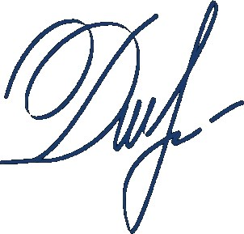

ОМВД России по г. Каменногорску
Следственный отдел
дело ПП-2024-0624
г. Каменногорск · 20.07.2024 г. · свидетель
| Допрос начат в 06:40 | Допрос окончен в 07:15 |
| Фамилия, имя, отчество | Дудин Степан Петрович |
|---|---|
| Дата рождения | 19.08.1967 (56 лет) |
| Место жительства / телефон | г. Каменногорск, ул. Гаражная, 4 · +7******71-05 |
| Место работы | дорожная служба |
| Семейное положение | разведён |

Вопрос: Представьтесь, пожалуйста, и расскажите, что случилось утром двадцать пятого.
— Дудин Степан Петрович. Я с бригадой прокладываем тут дорогу. Часов в пять утра — около пяти десяти — подъезжаю к обрыву у озера Черничное, а там на земле человек лежит. Не шевелится. Я сразу вызвал полицию, ничего не трогал, мало ли что.
Вопрос: Какая была погода в ту ночь? Что ещё заметили?
— Вечером двадцать четвёртого ливень был — короткий, да такой сильный, что я аж с другого конца трассы слышал, как по крыше кабины барабанит. Утром земля ещё мокрая была, и на грунтовке у самой тропы сразу колеи автомобильные свежие приметил. Ночью там кто‑то точно на машине стоял.
Вопрос: Вы узнали погибшую?
— Узнал… Это Кира Белова. Моя дочь Вера с ней были лучшими подругами. Наверное, тяжело сейчас дочке. Мы сейчас с ней отдельно живём. В разводе. Дочь сейчас отдельно живёт от меня.
Вопрос: Кого вы считаете виновным?
— Скорее всего тот, кто на машине был в ту ночь. Пусть полиция разбирается.
Показания с моих слов записаны верно, мною прочитаны. Замечаний к протоколу не имею.